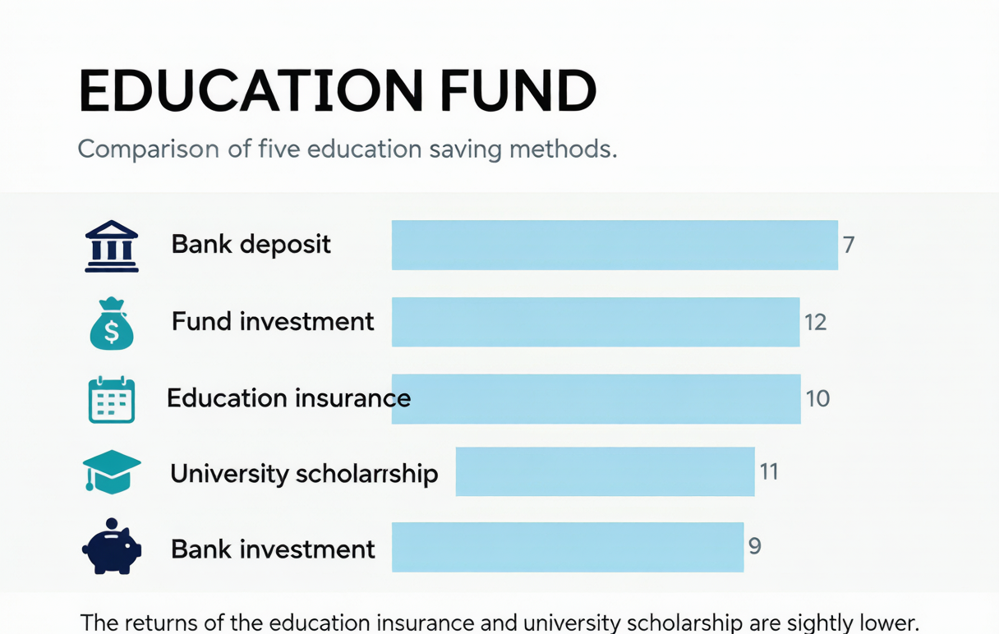
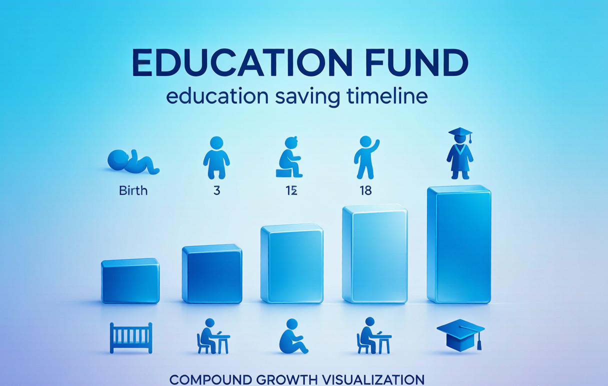

子女教育金规划：从幼儿园到大学总共要花多少钱？5种准备方式对比
从幼儿园到大学毕业，养一个孩子总共要多少钱？对比银行储蓄、基金定投、教育金保险、国债、指数基金5种教育金准备方式，附不同年龄段的最佳组合方案。
**摘要：** "养一个孩子要花100万"——这不是夸张。但更关键的是，这笔钱不是一次性需要，而是分18年陆续支出。提前规划和"到时候再说"，最终结果可能差30万以上。本文告诉你，不同年龄的孩子，应该用什么方式来准备教育金。
一、从幼儿园到大学，真实花费计算
以下数据基于2025年二线城市（如杭州、成都）的**中等养育标准**，单位：万元。
| 阶段 | 年限 | 学费/保育费 | 课外/兴趣班 | 生活费/其他 | 小计 |
|---|---|---|---|---|---|
| 幼儿园（私立中档） | 3年 | 8-12万 | 3-5万 | 2-3万 | **13-20万** |
| 小学（公立） | 6年 | 0（义务教育） | 15-25万 | 5-10万 | **20-35万** |
| 初中（公立） | 3年 | 1-3万 | 8-15万 | 3-5万 | **12-23万** |
| 高中（公立） | 3年 | 3-5万 | 5-10万 | 3-5万 | **11-20万** |
| 大学本科（公立） | 4年 | 3-5万 | — | 6-10万 | **9-15万** |
| **合计（底线方案）** | **19年** | — | — | — | **65万起** |
| **合计（中高端方案）** | **19年** | — | — | — | **110万+** |
**如果加上出国读研（2年）：** 再加60-100万（学费生活费）。总花费轻松突破200万。
关键洞察：**花费的高峰期集中在初中到大学（12年）**，这段时间每年支出可能达到5-10万。而你的收入高峰期往往也在这段时间——所以规划的核心不是"存够100万"，而是**现金流匹配**。
二、真实案例：两种规划方式，20年差了45万
案例A：提前规划型（张先生，孩子2018年出生）
张先生孩子出生那年就开始做教育金规划：
| 孩子年龄 | 每月定投 | 投资工具 | 年化收益 | 阶段末累计 |
|---|---|---|---|---|
| 0-6岁 | ¥1,500 | 指数基金+教育金保险各半 | 6% | ≈14万 |
| 7-12岁 | ¥2,000 | 基金定投+国债各半 | 4.5% | ≈14万已存+新增≈19万=33万 |
| 13-18岁 | ¥2,500 | 逐步转为债券+银行存款 | 3% | ≈33万+新增≈20万=53万 |
**孩子18岁时，教育金账户累计：约53万元。**
案例B：临时抱佛脚型（李先生，和张先生是邻居）
李先生觉得"孩子还小，不急"。孩子上初中才开始存钱：
| 孩子年龄 | 每月定投 | 年化收益 | 阶段末累计 |
|---|---|---|---|
| 0-11岁 | ¥0 | — | ¥0 |
| 12-15岁 | ¥3,000 | 4% | ≈15万 |
| 16-18岁 | ¥5,000 | 3% | ≈15万+18万=33万 |
**孩子18岁时，教育金账户累计：约33万元。**
差距：53万 vs 33万 = **差了20万**。更扎心的是，李先生后几年的月存金额（5000元）是张先生初始金额（1500元）的3倍多，但因为**失去了11年的复利时间**，最终反而少了20万。
**这就是复利的威力——越早开始，本金和时间共同作用，压力越小结果越好。**
三、5种教育金准备方式全面对比

| 对比维度 | 银行储蓄 | 基金定投 | 教育金保险 | 国债 | 指数基金 |
|---|---|---|---|---|---|
| 年化收益 | 1.5%-2.4% | 4%-8% | IRR 2.3%-2.8% | 2.0%-2.5% | 6%-10%（长期） |
| 本金安全 | ✅ 100% | ❌ 可能亏损 | ✅ 现金价值写合同 | ✅ 100% | ❌ 波动大 |
| 流动性 | ✅ 随时可取 | ✅ T+1赎回 | ❌ 前期退保损失大 | ⚠️ 提前取损利息 | ✅ T+1赎回 |
| 确定性 | ⭐⭐⭐⭐⭐ | ⭐⭐⭐ | ⭐⭐⭐⭐ | ⭐⭐⭐⭐⭐ | ⭐⭐ |
| 15年实际购买力 | **缩水约30%** | **增长60%-120%** | **勉强跑赢通胀** | **缩水约20%** | **增长100%-200%** |
| 最适合年龄段 | 15-18岁 | 0-12岁 | 0-6岁 | 12-15岁 | 0-10岁 |
**关键认知：** 银行存款和国债虽然安全，但15年下来实际购买力缩水20%-30%。教育金的敌人不是"亏钱"，而是"通胀"。
四、不同年龄段的最佳教育金组合方案
方案一：孩子0-3岁（出生-幼儿园前）——时间是你最大的资产
**核心策略：** 利用15-18年的超长投资周期，承担适度风险换取更高收益。
| 工具 | 占比 | 每月金额 | 年化预期 | 作用 |
|---|---|---|---|---|
| 指数基金定投 | 50% | ¥500-800 | 6%-10% | 长期增值，跑赢通胀 |
| 教育金保险 | 30% | ¥300-500 | 2.5%（IRR） | 确定性兜底，到期保证给付 |
| 国债 | 20% | ¥200-300 | 2.3% | 安全垫 |
**每月总投入：1,000-1,600元。预计18岁时累计：35-55万元。**
方案二：孩子6-12岁（小学阶段）——进攻转防守的过渡期
**核心策略：** 投资周期缩短到6-12年，逐步降低波动。
| 工具 | 占比 | 每月金额 | 年化预期 | 作用 |
|---|---|---|---|---|
| 混合基金/债券基金 | 40% | ¥600-800 | 4%-6% | 中等风险，中等收益 |
| 国债 | 30% | ¥400-600 | 2.3% | 锁定收益 |
| 银行定存/大额存单 | 30% | ¥400-600 | 2.0% | 高流动性储备 |
**每月总投入：1,400-2,000元。预计18岁时累计：25-35万元（含之前储蓄）。**
方案三：孩子12-18岁（初高中阶段）——防守为主
**核心策略：** 距离用款只有1-6年，不能再冒风险。优先保本。
| 工具 | 占比 | 每月金额 | 年化预期 |
|---|---|---|---|
| 银行定期/大额存单 | 50% | ¥800-1,200 | 2.0% |
| 国债 | 30% | ¥500-800 | 2.3% |
| 货币基金（活期） | 20% | ¥300-500 | 1.8% |
**这个阶段不要再买基金或股票**——万一孩子上大学那年股市大跌，你的教育金可能亏掉20%-30%，到时哭都来不及。
五、教育金保险到底值不值得买？——用IRR说话

教育金保险本质上是一款"到期给付型"储蓄保险。我们以某热销产品为例做IRR测算：
**产品设定：** 孩子0岁投保，年交1万，交10年（总保费10万）。18-21岁每年领取3万（共12万）。
| 保单年度 | 现金流 | 说明 |
|---|---|---|
| 第1-10年 | -10,000/年 | 交保费 |
| 第18-21年 | +30,000/年 | 领取教育金 |
**IRR计算结果：约2.4%-2.6%。**
这个收益和银行存款差不多，但教育金保险有3个独特价值：
1. **强制储蓄**：到期不交就会断保，逼着你按时存钱
2. **确定性**：18岁一定能拿到这笔钱，不受市场波动影响
3. **豁免条款**：如果投保人不幸身故，后续保费免缴，合同继续有效
**适合谁？** 自律性不强、管不住钱的父母——教育金保险本质上是用"低收益"换"强制储蓄纪律"。
**不适合谁？** 有投资纪律的家长——同样的钱定投指数基金，18年下来收益高出2-3倍。
常见问题 FAQ
**Q：教育金和养老金冲突怎么办？先顾哪个？**
A：这是一个经典的资源分配难题。如果两者无法兼顾，**优先保证养老金充足底限**，再考虑教育金的弹性空间。原因很简单——孩子上大学可以申请助学贷款（国家助学贷款利率极低且在校期间免息），但你不能靠贷款来养老。实在钱不够的情况下，教育金可以通过助学贷款+孩子自己打工来解决部分缺口；但养老金没有替代方案。建议先建立基础的养老储蓄（覆盖退休后基本生活），剩余可支配收入再配置到教育金中。
**Q：大学费用可以用助学贷款吗？利率多少？**
A：完全可以，而且是很好的补充方案。国家助学贷款2025年的利率约为LPR减30bp（约3.15%），在校期间利息由财政全额补贴（你不需要付一分钱利息），毕业后才开始计息。本科每年最高可贷16,000元，研究生20,000元。建议如果教育金不够覆盖全部大学费用，用助学贷款来补充差额——这比借钱上民办高校划算得多。但注意：助学贷款不应是唯一方案，毕竟毕业后就要开始还款。
**Q：孩子如果不上大学怎么办？教育金怎么处理？**
A：视工具不同处理方式不同：（1）教育金保险——如果孩子不上大学（如选择职业教育或创业），大多数产品可以将年金转为其他用途，或继续在账户中增值、等孩子其他人生节点（如结婚、创业）再领；（2）基金定投/银行存款——完全灵活，随时可改变用途（转为孩子创业金、婚嫁金甚至补充自己的养老金）；（3）国债——提前兑现会损失部分利息。建议不要把"教育金"锁死在单一产品里，保持30%-50%的资产灵活性。
*本文费用测算基于2025年二线城市中位水平，实际开支因城市和家庭选择差异较大。投资收益率均为历史参考值，不构成未来收益保证。*
*教育金规划是一项长期系统工程，建议每2年评估一次，根据市场变化和家庭情况动态调整。*